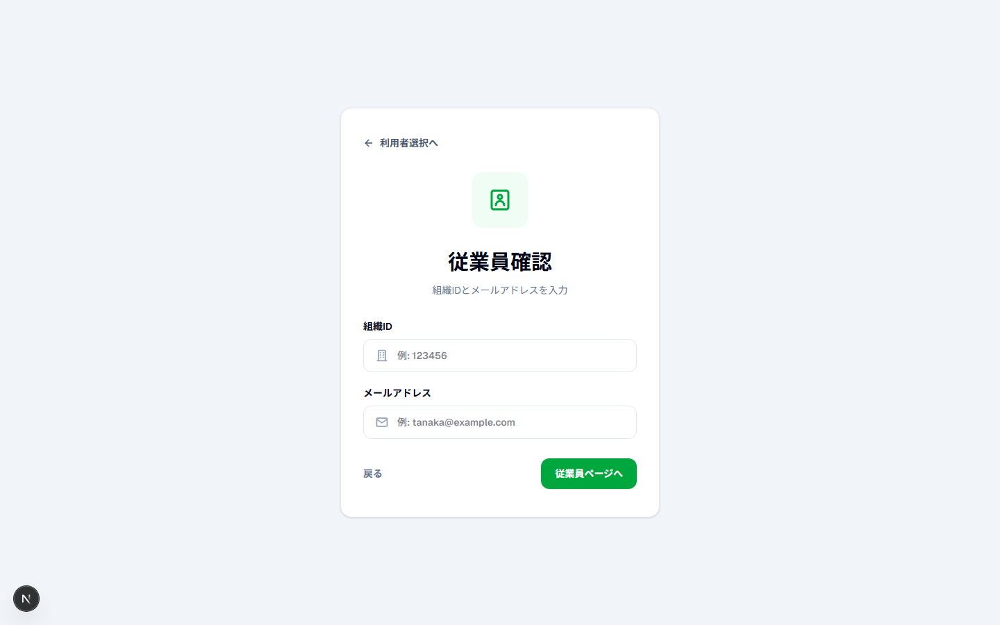
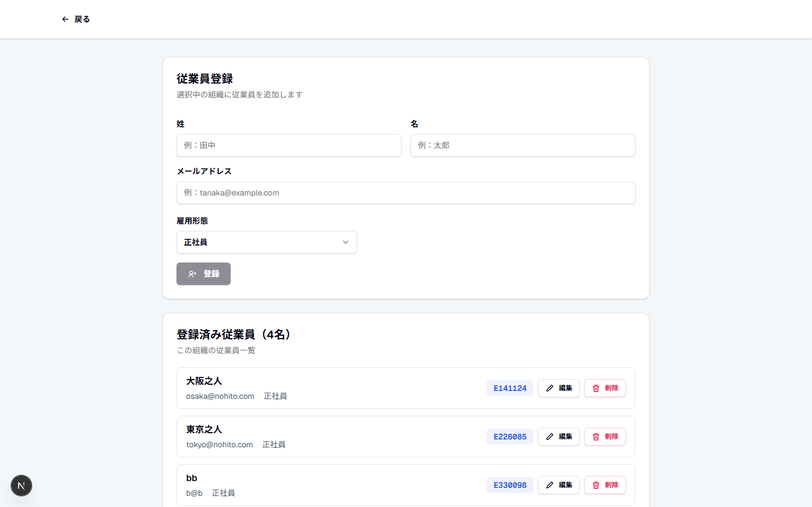
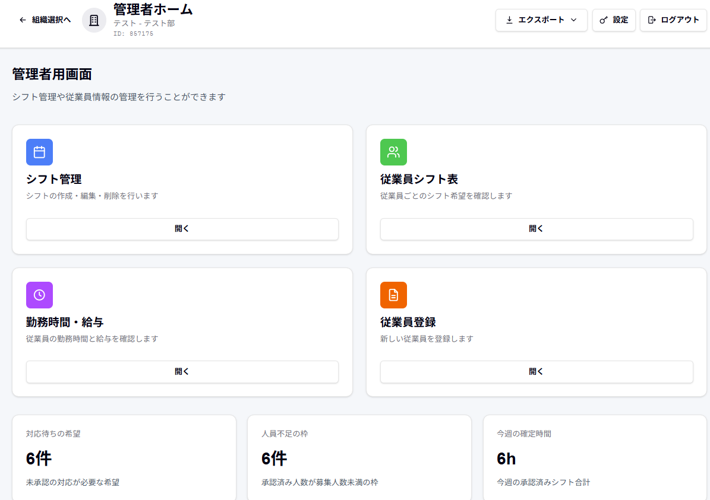
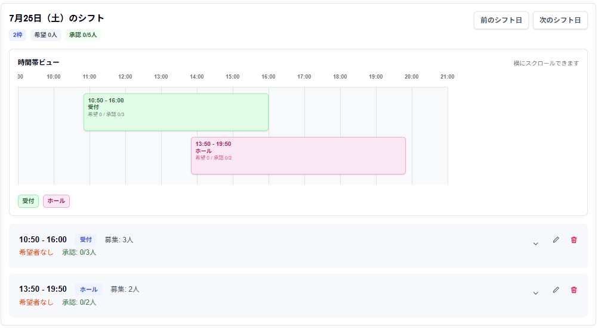
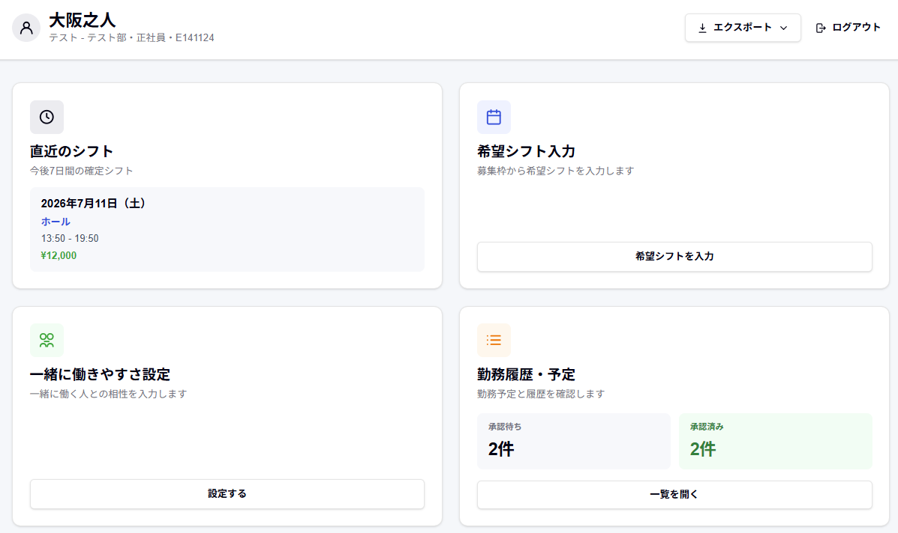
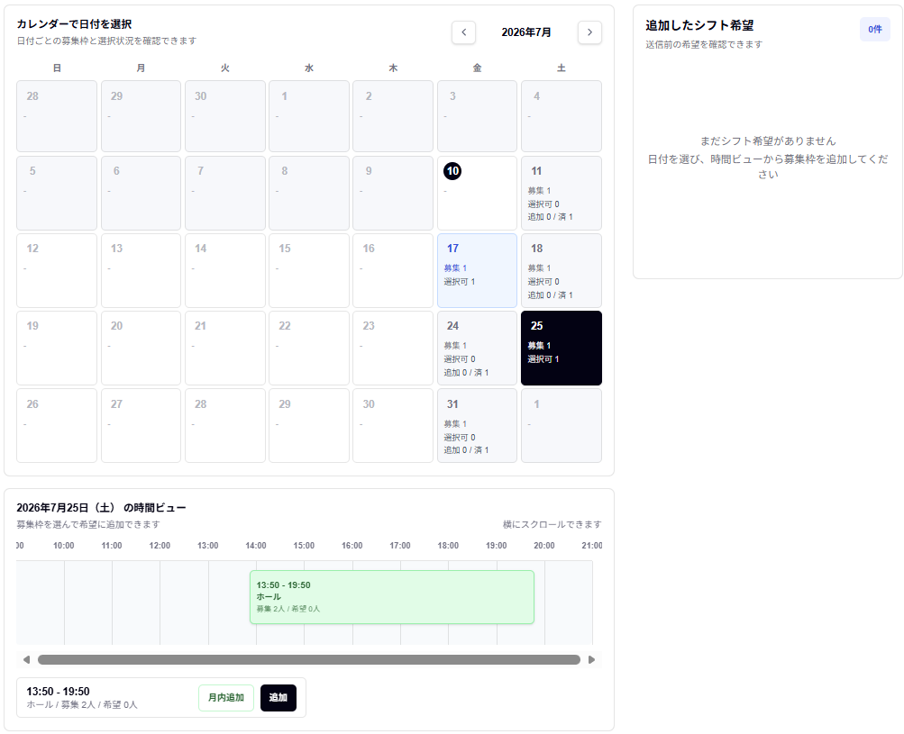
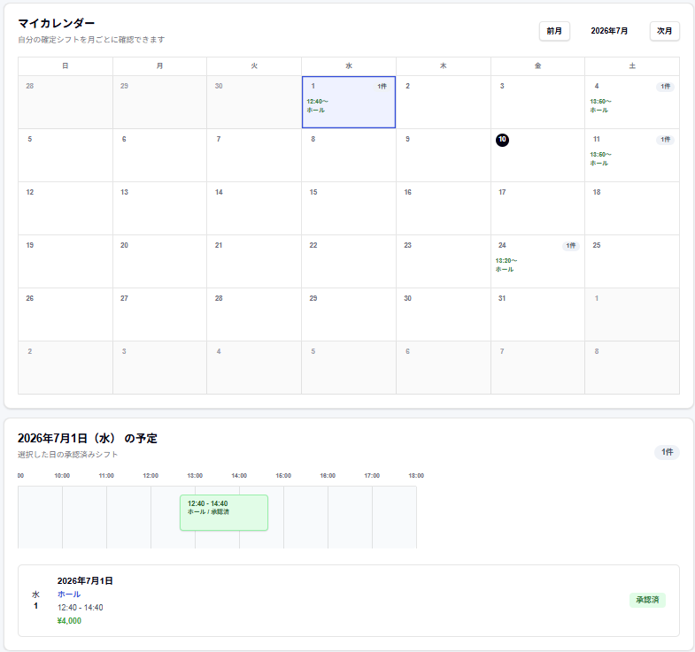

一緒に働きやすさ
従業員同士が-5から+5で入力した相性を、組み合わせの判断材料にします。
Problem
勤務できる日を集めるだけでも大変ですが、実際の現場では 「誰と一緒に入りたいか・入りたくないか」など、人間関係の配慮が必要です。 これらを踏まえたシフト作成は、時間も手間もかかってしまいます。
この人とは少し入りづらい。
でも、直接は言いにくい。
Chessは、こうした想いもシステム上で扱い、 管理者が配慮しやすい形に整理します。
Main Feature
従業員が入力した「一緒に働きやすさ」、管理者が設定した業務スキル、 さらに月内の希望時間をもとに、おすすめの承認候補を表示します。 管理者は、チームの相性と勤務機会の偏りを見ながら最終判断できます。
従業員同士が-5から+5で入力した相性を、組み合わせの判断材料にします。
管理者が登録した業務スキルを使い、現場での任せやすさも考慮します。
月内の希望時間が少ない人を優先し、勤務機会の偏りを抑える判断を支援します。
Appeal
従業員は自分でパスワードを作ったり、新規登録したりする必要がありません。 管理者が登録したメールアドレスと6桁の組織IDを入力するだけで、 すぐに希望の提出が可能です。

名前・メールアドレス・雇用形態を登録します。
6桁の組織IDと、管理者が登録したメールアドレスを入力します。
別途パスワード登録なしで、希望シフト入力へ進めます。
Skill
管理者が従業員ごとの業務スキルを数値で評価し、その結果をシフト作成に反映する機能。 相性だけに偏らず、業務上の任せやすさも確認しながら、より安定したシフトを組めるのが特徴です。

Features
Chessは現在も進化を続けています。以下の機能を中心に、シフト作成をよりスムーズにします。
管理者はメールアドレスとパスワードで登録後、メール認証でログインします。
管理する組織を作成し、組織の切り替えも簡単に行えます。
日付、時間、ポジション、募集人数を設定し、同じ曜日の枠を月内でまとめて作成できます。
相性、業務スキル、月内の希望時間を見ながら、おすすめ候補を確認できます。
従業員ごとのシフト希望や確定状況を一覧で確認できます。
承認済みシフトを集計し、勤務後は実時間・実給与・メモも補正できます。
確定シフト、希望、履歴、勤務時間を見渡せます。
確定シフトのマイカレンダー、勤務履歴、勤務時間と給与を確認できます。
月間カレンダーと時間帯表示から直感的に希望を選べます。
募集枠への希望に加え、管理者が許可した場合は募集枠のない時間にも希望を提出できます。
相性・業務スキル・公平性を一緒に見られることが、Chessの主要な特長です。
Screens
管理者・従業員それぞれのホームから目的の画面へすぐ移動できます。月間カレンダーと日別表示を使い分け、募集・希望・確定の状態も分かりやすく整理しています。
よく使う機能をカードで整理し、次に行う操作を見つけやすくしています。
月間カレンダーで全体を見て、日を選ぶと時間帯の詳細を確認できます。
承認待ち・勤務予定・勤務済みを、色とラベルで分かりやすく表示します。

募集、従業員、勤務時間、設定をひとつの画面から開けます。

ポジション別のシフト枠を時間軸で見比べられます。
相性・スキル・希望時間を並べて確認できます。

確定シフト、希望、履歴、勤務時間を見渡せます。

月間カレンダーと時間帯表示から直感的に希望を選べます。

承認済みシフトを月と日の両方から確認できます。
Flow
Chessを導入してから、シフトを作成・管理できるまでの流れは以下の通りです。
サービスページから内容を確認します。
管理者または従業員を選択します。
日付・時間・ポジション・募集人数を設定します。
従業員は希望シフトを提出します。
希望とおすすめ候補を確認し、確定シフトを作成します。
承認済みシフトをマイカレンダーで確認します。
Benefits